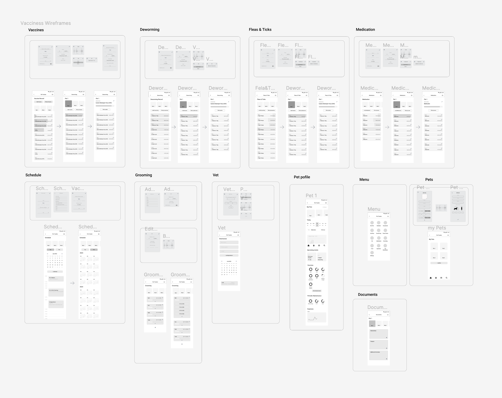

PawPalz - Pet Tracker
UX/UI Design
Overview
PawPalz is a pet care app that'll help you keep tabs on all your furry friends' important needs. Whether you're a newbie pet owner or a seasoned pro with a whole bunch of pets, managing their vaccines, treatments, and everything else can be a real headache sometimes. But fear not, my friend, because with Pet Tracker, you'll have all that crucial info right at your fingertips. It's like having a personal assistant for your pets, making sure you stay on top of their every need.
My Role
As the designer of this project, I will be performing user research and competitive analysis, and creating user flow, wireframes and prototypes.
Process
Competitor Analysis
Our initial focus was on conducting a Competitor Analysis to gain insights into the market space and provide context for the problem we're addressing. We analysed three apps similar to PawPals: 11Pets, DogLog, and Clio.
Our research honed in on User Interface elements and User Experience Flows, including Onboarding, task or reminder addition, User Ratings, and feature sets.
Notably, two of the competitors employed bright colours, such as yellow, in their colour schemes. Yellow, associated with joy and friendship, aligns perfectly with the emotional connection people have with their pets. This friendly and emotionally welcoming aspect is crucial for such apps.
However, the feature sets varied among these apps. 11Pets stood out as the most valued due to its comprehensive features. Nonetheless, many of these features went unused, and users found the app "difficult to navigate," although it became easier with familiarity. This insight pointed us toward the importance of creating an intuitive and user-friendly app.
Research Strategy
We conducted five informal interviews with friends and pet owners, leading to the creation of two personas based on common user goals and pain points:
Sarah, pet owner.
Pain point: wants to organise her pets information, all in one place. Feels like some apps offer more features than she needs, and aren't easy to navigate.
Goal: have a space to keep their pets essential information and reminders, fast and easy to access.
Alex, dog breeder.
Pain point. Being up to date with all her pets' health tests, vaccine records and such has been complicated at times. Keeping information in certain apps has proven unnecessarily complicated and time consuming. Feels like a nuisance, and ends up organising and keeping everything separately (on paper, computer, phone).
Goal: Streamlined storage of pet information and tracking multiple pets in one place.
Ideation
In the sketching phase, our primary objective was to design an interface that users could intuitively understand, minimising the need for extensive exploration. We drew inspiration from popular mobile calendar apps and traditional paper weekly planners, both of which are familiar to many users.
The task creation process was designed to resemble adding events to a mobile calendar, a pattern widely recognized by users. We aimed for quick and easy editing, minimizing steps required.
Regarding app functionality, we started with a simple initial prototype, intending to expand it as the product matures and gains traction.
Wireframes
Home Page
We introduced the homepage to provide a central place to provide the user with a general overview view of all their pets' schedules whilst being able to quickly access each pet-specific information through a carousel at the top of the screen. “Todays” schedule is presented as a check list so the user can tick off the chores as they go, just like a notebook.
Vaccine Page
Just like the home page it provides a general overview of all of the pets vaccines, as well as providing fast and easy access to the lists of each individual pet through a carousel.